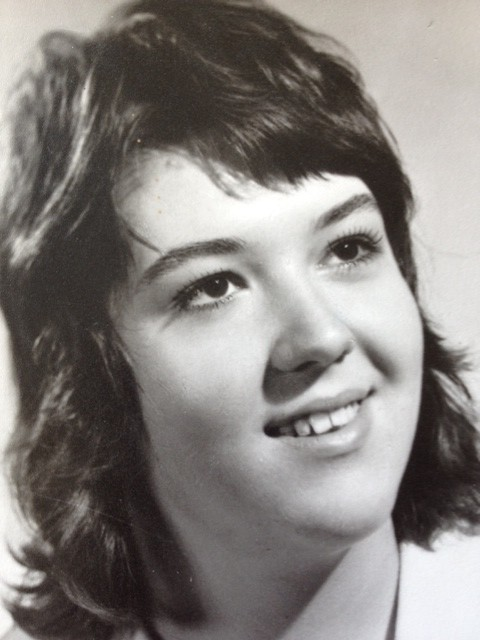
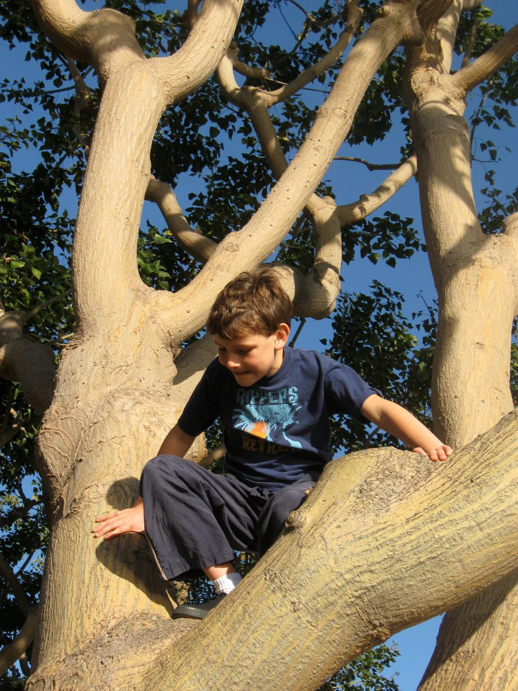
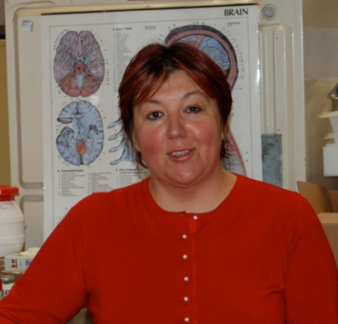
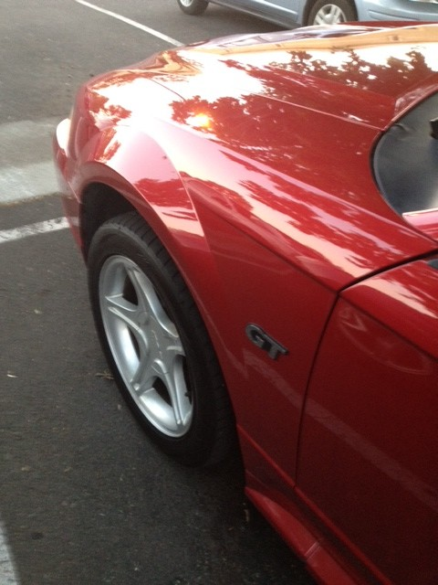

Aging and Warped Time Perception
I was enormously pleased that people seemed to like my first post, so now I continue my musing hoping the feeling on my audience's part will be the same for my upcoming musings... This one is about aging. Not that there are not enough published opinions about the issue, but I am curious how people think about it, maybe some will be willing to share their ideas or thoughts.
Age is such an interesting thing, I feel you are almost never at the right age. At least I never was. When I was 17 I had a serious crush on an older man, my dad's doctor friend and when he said his ideal woman was in her early twenties - which incidentally meant he liked his woman pretty young!!! - I was devastated. I wanted to be 21 so bad just to appeal to him and was very impatient to be that old, so he might notice me. The 21 came and went and by that time I forgot about him and my original reason why I wanted the clock to tick faster, but it was generally my wish to be older at that young age. Of course, time did not speed up just to accommodate me but relatively these were long years for me, I was impatient to go somewhere fast, even if I did not know what it was, but I had to rush into the future.

Then there were some years when I did not have much wish to change the pace of time but was not very satisfied with myself any way, I always found things that were imperfect about my appearance. My teeth were uneven and had spaces between them and when I immigrated to the California where everyone had perfect teeth, I had mine fixed and that made me content. For a while...
I still did not get happy about the other things I was sure were wrong with my appearance like the short neck and the thick ankles, but somehow my twenties and thirties were the only times when I did not think too much about my aging, it was mostly about my imperfections that bugged me. I felt strong and almost invincible and despite the fact that I have seen the ads with gorgeous young women everywhere, I did not think much about getting older or wishing my time going at a different pace. These years came and gone, we got established, moved a few times, changed jobs, residencies and priorities, we were just plain busy.
Now coming to the forties changed my outlook on life again. Now I felt I needed to look younger and wished for my time to slow down a bit. It did not happen, but I tried with all my might to slow at least the showing of my age now. It did not make me depressed to pass forty as most of my friends were feeling, but still I kind of lost a little of the shine I had before. I was still fast and organized and tried to do as much as before, but was checking myself in the mirror for signs of aging, wrinkles and sagging and started to use creams, took some antioxidants, vitamins in the hope that it will help me slow down time. I also started to eat healthier and become a little more physically active, so improved my lifestyle a little.
Then I started a new chapter in my life with the birth of my son at 45, it was almost a complete "reset" for my whole way of being. For the few years following his birth I was so focused on him, I did not think about time, aging, or even myself much, it was just a huge bliss of having someone that was a little bit part of me. We had this bond that was incredibly strong and my happiness was off the scale. I am sure others experienced something like this and maybe relate to this feeling of unreal elation a child can cause in someone's life.

By this time I had a brush with my mortality, too since my meningioma was discovered when I was 43. It could be lethal or could cause serious complications if there is need for surgical removal, you never know if after brain surgery someone will be themself or not. So I got a dose of fear and uncertainty that made me focus on the moment and the present more. If you are not sure of your future, that is all you got. Not saying I was afraid of death, because that only came for a few moments and then my optimism always took me out of those moments luckily, yet I was not the invincible "pink bunny" anymore.

Next there are the fifties, where I am now (almost at the end of this decade!) I am a senior for crying out loud!!! Now I was more free to think about myself again, Ali is at school and has his own activities and does not need me there constantly, so I started to pay attention to myself again. Too bad!
Now I want time not to slow down but got to go backwards! I feel as I were a teenager inside yet when I see myself on a picture or in the mirror I am confronted with all kinds of signs of aging. The sagging skin and the crows feet just a few outward sign of all the things that are malfunctioning in my once well designed body. Now I would love to be younger, but obviously it is not a possibility, so have to adjust my expectations and give myself a break. Now I am at the age when the "looking good" always ends with the phrase "for your age" So unfair, but facts cannot be changed no matter how much we wish for that to happen.
So I try to focus on other things that are more positive about the present like how I feel myself being wiser and calmer than before. I lost the jerky impatience of my youth but instead I look at things with a different eye and I have a wiser outlook. My focus is more on people and how they feel and what is fair to them. I am not as selfish and can appreciate more views and tolerate more. I like people more, I am less critical to others and to the world but try to do more for our future since it is my son's time. I want the best for him and his contemporaries and all those generations who will come after us.
I still take the vitamins and antioxidants, use the creams in hope of getting some improvements on my now aging body. If someone tells me I look fortyish, it makes my day for sure, but my focus shifted again, now I want to write and reorganize, clean my house and my thoughts of the things that cluttering. Let's see where we will go from there...

I wonder again if anyone felt these weird time related wishes I experienced? My son, who is twelve, tells me he wants to be sixteen faster, so he could get to drive. His mom loves sports cars, namely Mustangs, so he wants to drive one soon and feels impatient to reach the age for it.....
Interesting isn't it? What do you think?